| Ảnh | Nhân vật | Tệp gốc trên Commons | Tác giả | Giấy phép | Chú thích |
|---|---|---|---|---|---|
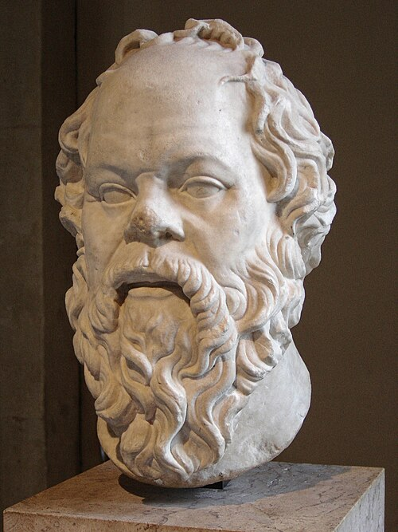 | Socrates CH02-BCE05-01 | Socrates Louvre.jpg | Copy of Lysippos (?) | Public domain | Chân dung Socrates, thế kỷ 1 (tưởng tượng). Ảnh: Wikimedia Commons, Public domain. |
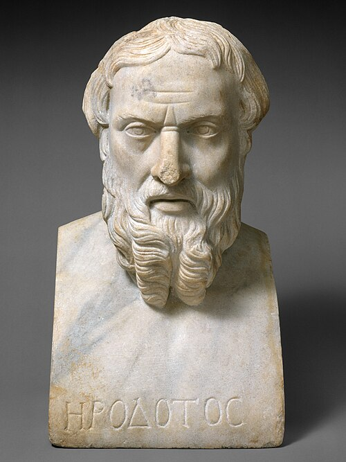 | Herodotus CH02-BCE05-03 | Marble bust of Herodotos MET DT11742 (cropped).jpg | This file was donated to Wikimedia Commons as part of a project by the Metropolitan Museum of Art . See the Image and Data Resources Open Access Policy | CC0 | Chân dung Herodotus, Marble bust of Herodotos, thế kỷ 2 (tưởng tượng). Ảnh: Wikimedia Commons, CC0. |
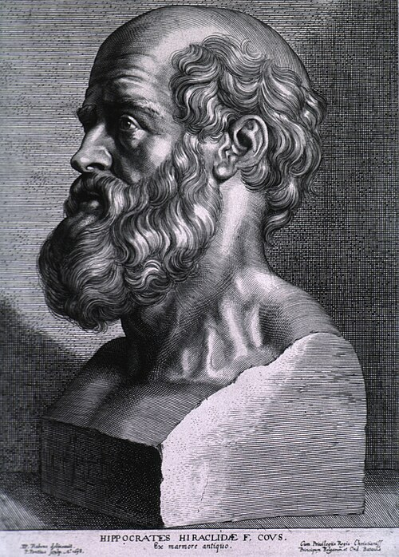 | Hippocrates xứ Cos CH02-BCE05-04 | Hippocrates rubens.jpg | Paulus Pontius / After Peter Paul Rubens | Public domain | Chân dung Hippocrates xứ Cos, Hippocrates rubens, 1638 (tưởng tượng). Ảnh: Wikimedia Commons, Public domain. |
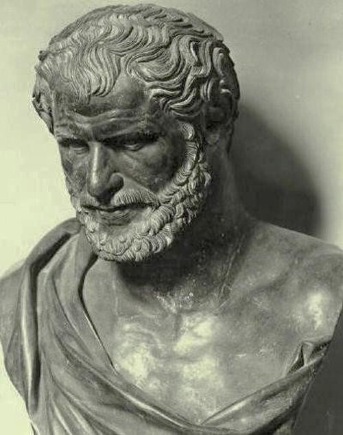 | Democritus CH02-BCE05-05 | Bust of an unknown Greek - Museo archeologico nazionale di Napoli.jpg | Original uploader was Odysses | CC BY-SA 3.0 ghi công bắt buộc | Chân dung Democritus, Bust of an unknown Greek - Museo archeologico nazionale di Napoli (tưởng tượng). Ảnh: Wikimedia Commons, CC BY-SA 3.0. |
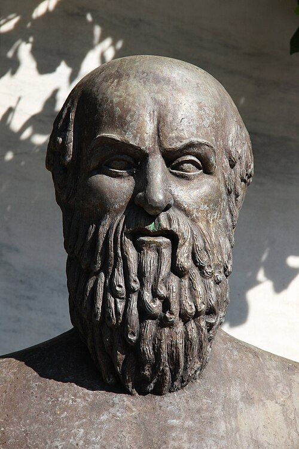 | Aeschylus CH02-BCE05-06 | Aeschylusathens.jpg | Tilemachos Efthimiadis | CC BY-SA 2.0 ghi công bắt buộc | Chân dung Aeschylus (tưởng tượng). Ảnh: Wikimedia Commons, CC BY-SA 2.0. |
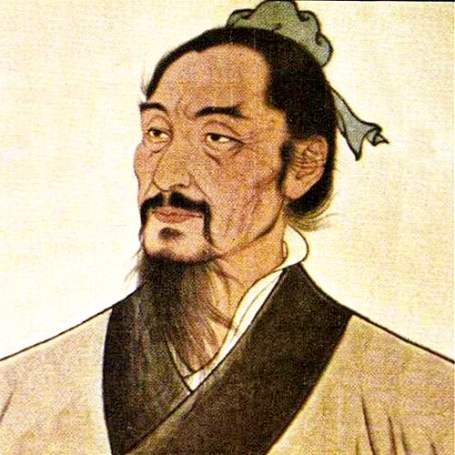 | Mặc Tử CH02-BCE05-07 | Философ Мо-Цзы.jpg | Vjacheslav Rublevskiy | CC0 | Chân dung Mặc Tử, Философ Мо-Цзы (tưởng tượng). Ảnh: Wikimedia Commons, CC0. |
| Pāṇini CH02-BCE05-08 | Grammarian Panini.png | Srinithi111 | CC BY-SA 4.0 ghi công bắt buộc | Chân dung Pāṇini (tưởng tượng). Ảnh: Wikimedia Commons, CC BY-SA 4.0. | |
| Tôn Tử CH02-BCE05-09 | 吴司马孙武.jpg | Unknown author Unknown author | Public domain | Chân dung Tôn Tử, 吴司马孙武 (tưởng tượng). Ảnh: Wikimedia Commons, Public domain. | |
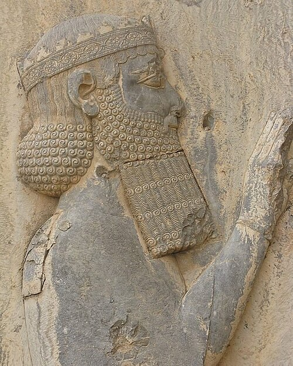 | Darius I CH02-BCE05-10 | Darius the great. jpg.jpg | Surenae | CC BY-SA 4.0 ghi công bắt buộc | Chân dung Darius I, Darius the great. jpg (tưởng tượng). Ảnh: Wikimedia Commons, CC BY-SA 4.0. |
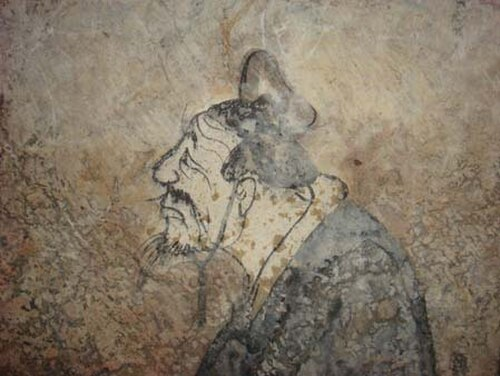 | Khổng Tử CH02-BCE06-01 | Confucius, fresco from a Western Han tomb of Dongping County, Shandong province, China.jpg | Anonymous Chinese painter of the Western Han period | Public domain | Chân dung Khổng Tử (tưởng tượng). Ảnh: Wikimedia Commons, Public domain. |
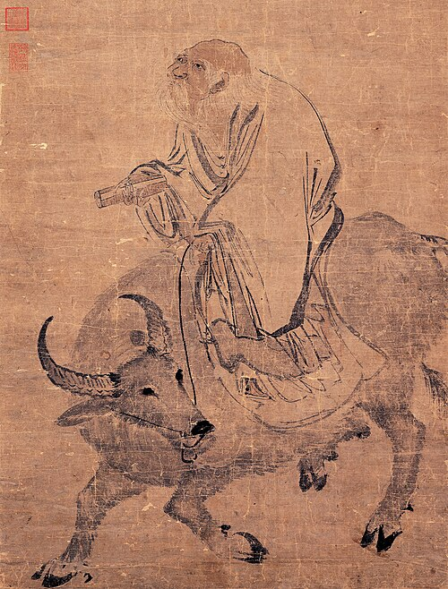 | Lão Tử CH02-BCE06-02 | Zhang Lu-Laozi Riding an Ox (cropped).jpg | Zhang Lu | Public domain | Chân dung Lão Tử, Laozi Riding an Ox 畫老子騎牛, khoảng 1368–1644 (tưởng tượng). Ảnh: Wikimedia Commons, Public domain. |
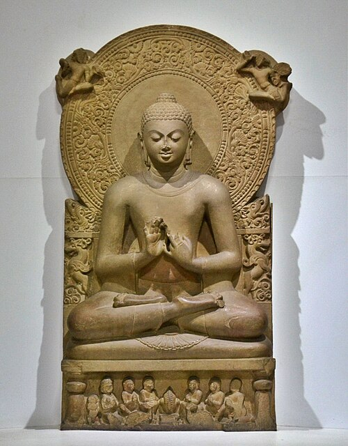 | Đức Phật CH02-BCE06-03 | Buddha in Sarnath Museum (Dhammajak Mutra).jpg | พระมหาเทวประภาส วชิรญาณเมธี (ผู้ถ่าย-ปล่อยสัญญาอนุญาตภาพให้นำไปใช้ได้เพื่อการศึกษาโดยอยู่ภา่ยใต้ cc-by-sa-3.0) ผู้สร้างสรรค์ผลงาน/ส่งข้อมูลเก็บในคลังข้อมูลเสรีวิกิมีเดียคอมมอนส์ - เทวประภาส มากคล้าย | CC BY-SA 3.0 ghi công bắt buộc | Chân dung Đức Phật, Buddha in Sarnath Museum (Dhammajak Mutra) (tưởng tượng). Ảnh: Wikimedia Commons, CC BY-SA 3.0. |
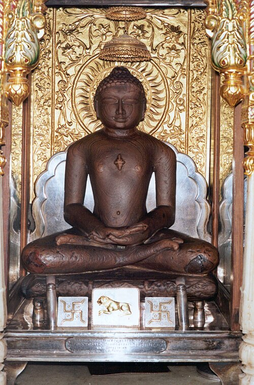 | Mahāvīra CH02-BCE06-04 | Mahavir.jpg | Dayodaya | CC BY-SA 3.0 ghi công bắt buộc | Chân dung Mahāvīra, Mahavir (tưởng tượng). Ảnh: Wikimedia Commons, CC BY-SA 3.0. |
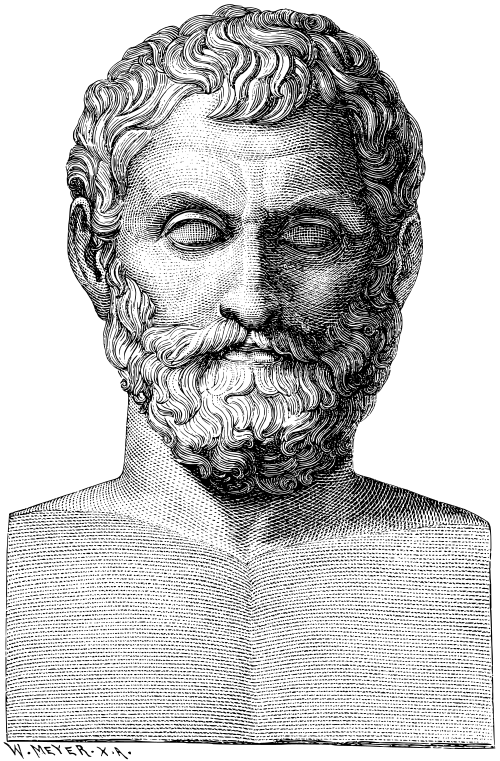 | Thales xứ Miletus CH02-BCE06-05 | Illustrerad Verldshistoria band I Ill 107.svg | Wilhelm Meyer | Public domain | Chân dung Thales xứ Miletus, Illustrerad Verldshistoria band I Ill 107 (tưởng tượng). Ảnh: Wikimedia Commons, Public domain. |
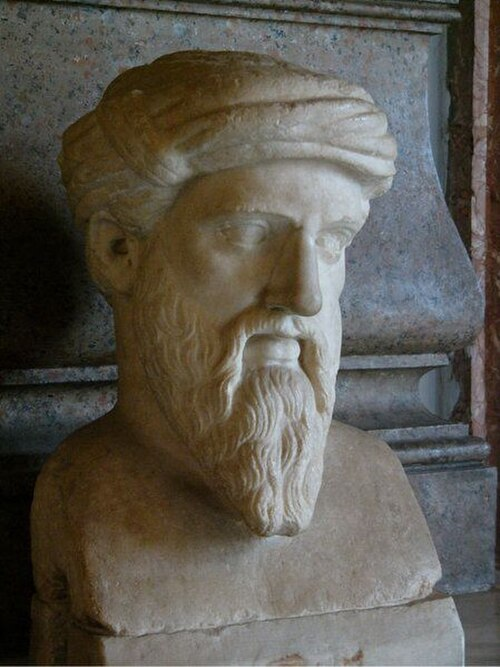 | Pythagoras CH02-BCE06-06 | Kapitolinischer Pythagoras.jpg | The original uploader was Galilea at German Wikipedia . | CC BY-SA 3.0 ghi công bắt buộc | Chân dung Pythagoras (tưởng tượng). Ảnh: Wikimedia Commons, CC BY-SA 3.0. |
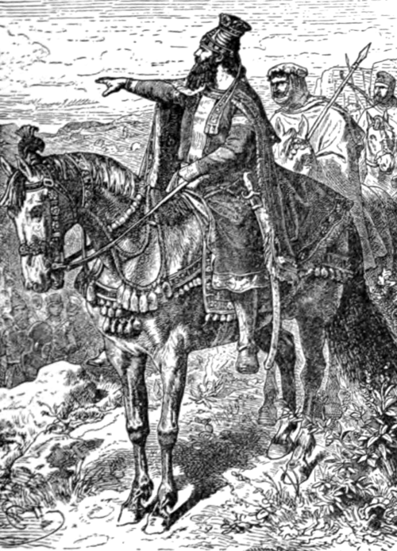 | Cyrus Đại đế CH02-BCE06-07 | Great Men and Famous Women Volume 1 - Cyrus the Great.png | Charles Francis Horne Clarence Cook | Public domain | Chân dung Cyrus Đại đế, Great Men and Famous Women Volume 1 - Cyrus the Great (tưởng tượng). Ảnh: Wikimedia Commons, Public domain. |
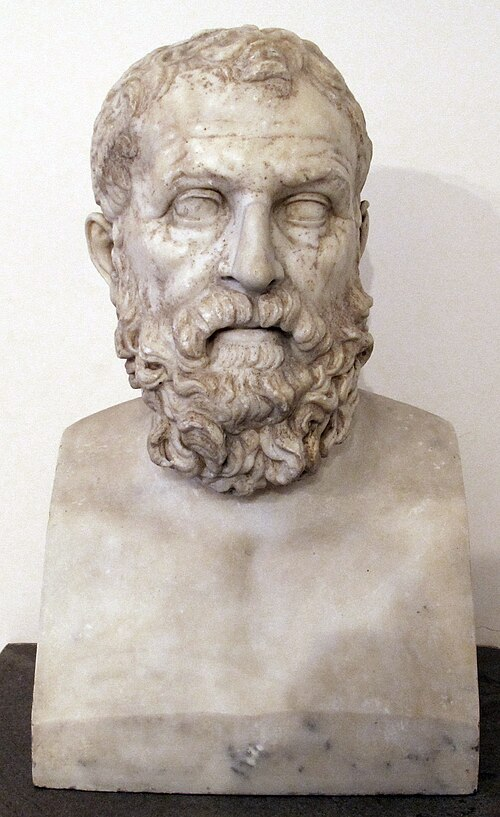 | Solon CH02-BCE06-08 | Ignoto, c.d. solone, replica del 90 dc ca da orig. greco del 110 ac. ca, 6143.JPG | Sailko | CC BY-SA 3.0 ghi công bắt buộc | Chân dung Solon (tưởng tượng). Ảnh: Wikimedia Commons, CC BY-SA 3.0. |
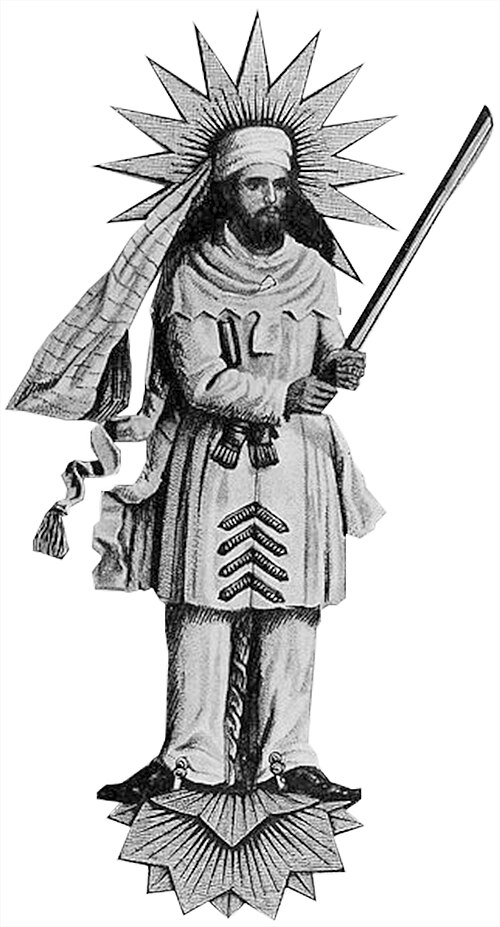 | Zarathustra CH02-BCE06-09 | Zartosht 30salegee.jpg | Photo is extracted from "Persia by a Persian: being personal experiences, manners, customs, habits, religious and social life in Persia". Author: Isaac Adams. Published by: E. Stock, 1906. | Public domain | Chân dung Zarathustra, Zartosht 30salegee (tưởng tượng). Ảnh: Wikimedia Commons, Public domain. |
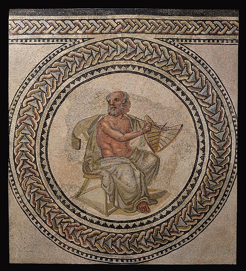 | Anaximander CH02-BCE06-10 | Anaximander Mosaic.jpg | ancient Roman mosaic artist from the early third century AD | Public domain | Chân dung Anaximander (tưởng tượng). Ảnh: Wikimedia Commons, Public domain. |
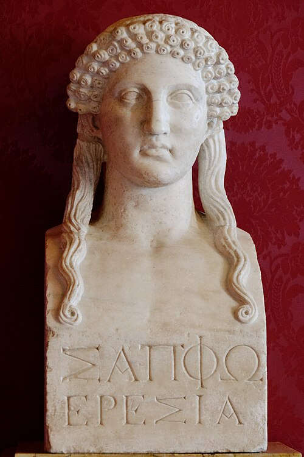 | Sappho xứ Lesbos CH02-BCE06-11 | Bust Sappho Musei Capitolini MC1164.jpg | Marie-Lan Nguyen | Public domain | Chân dung Sappho xứ Lesbos, Bust Sappho Musei Capitolini MC1164 (tưởng tượng). Ảnh: Wikimedia Commons, Public domain. |
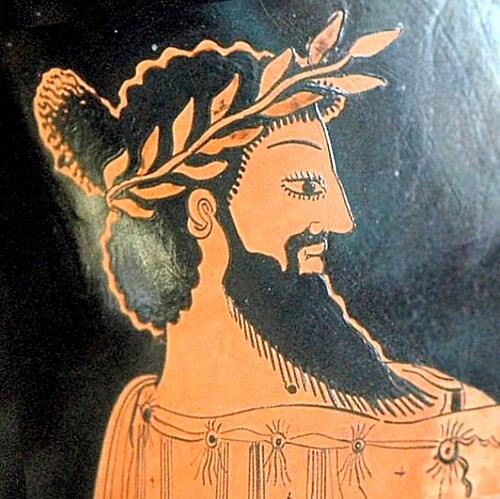 | Croesus xứ Lydia CH02-BCE06-12 | Croesus portrait.jpg | Marco Prins | CC0 | Chân dung Croesus xứ Lydia, Croesus portrait (tưởng tượng). Ảnh: Wikimedia Commons, CC0. |
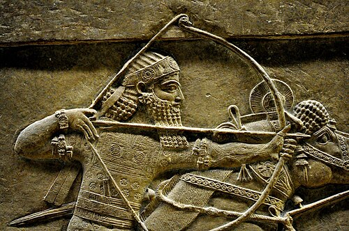 | Ashurbanipal CH02-BCE07-01 | Ashurbanipal, detail of a lion-hunt scene from Nineveh, 7th century BC, the British Museum.jpg | Osama Shukir Muhammed Amin FRCP(Glasg) | CC BY-SA 4.0 ghi công bắt buộc | Chân dung Ashurbanipal (tưởng tượng). Ảnh: Wikimedia Commons, CC BY-SA 4.0. |
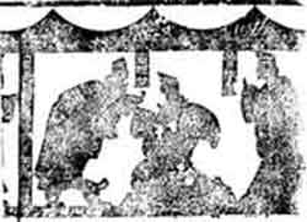 | Quản Trọng CH02-BCE07-02 | Qihuangongguanzhong.jpg | — | Public domain | Chân dung Quản Trọng, Qihuangongguanzhong (tưởng tượng). Ảnh: Wikimedia Commons, Public domain. |
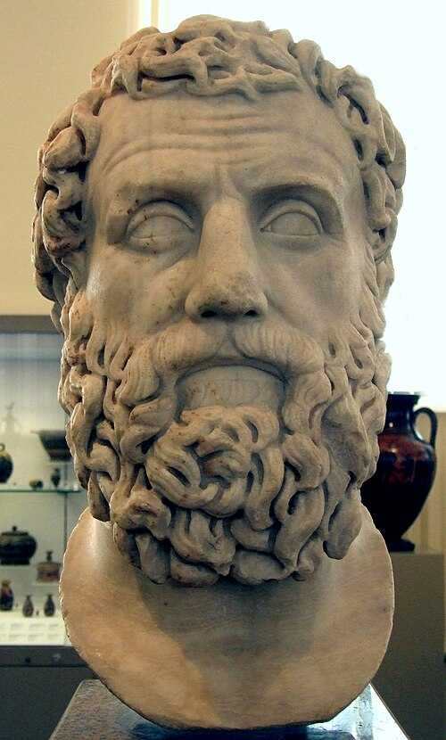 | Archilochus CH02-BCE07-04 | Archilochus 01 pushkin.jpg | shakko | CC BY-SA 3.0 ghi công bắt buộc | Chân dung Archilochus (tưởng tượng). Ảnh: Wikimedia Commons, CC BY-SA 3.0. |
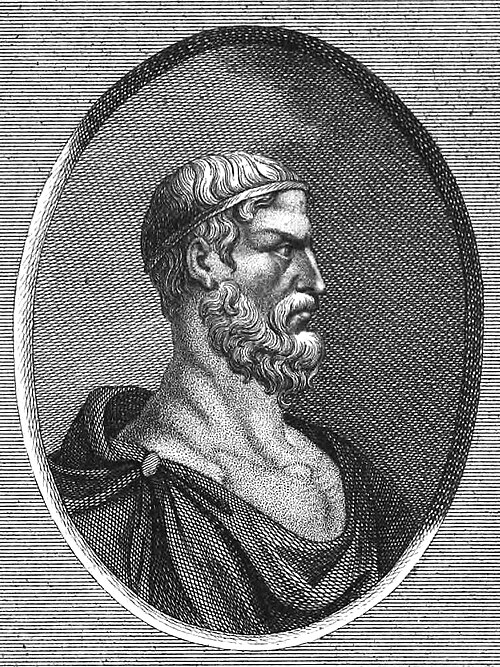 | Dracon CH02-BCE07-05 | Draco engraving from 1833 (cropped) 1 1.jpg | Max Karl Baldamus | Public domain | Chân dung Dracon, Draco engraving from 1833 (cropped) 1 1 (tưởng tượng). Ảnh: Wikimedia Commons, Public domain. |
| Jeremiah CH02-BCE07-06 | Jeremiah.jpg | 18 century icon painter | Public domain | Chân dung Jeremiah (tưởng tượng). Ảnh: Wikimedia Commons, Public domain. | |
 | Yajnavalkya CH02-BCE07-07 | Yajnavalkya and Janaka.jpg | எஸ். பி. கிருஷ்ணமூர்த்தி | CC BY-SA 3.0 ghi công bắt buộc | Chân dung Yajnavalkya (tưởng tượng). Ảnh: Wikimedia Commons, CC BY-SA 3.0. |
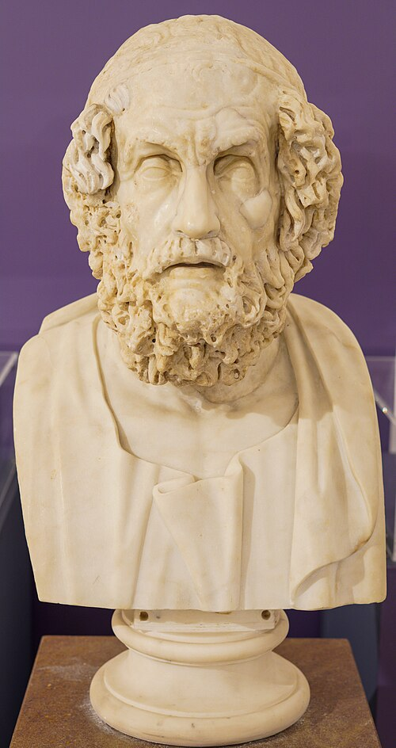 | Homer CH02-BCE08-01 | Homer bust, Farnese collection (Naples).jpg | NikonZ7II | CC BY-SA 4.0 ghi công bắt buộc | Chân dung Homer (tưởng tượng). Ảnh: Wikimedia Commons, CC BY-SA 4.0. |
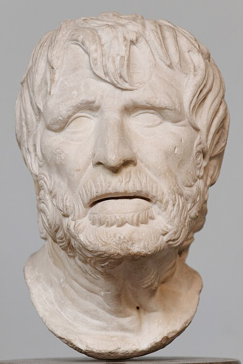 | Hesiod CH02-BCE08-02 | Pseudo-Seneca BM GR1962.8-24.1.jpg | Unknown artist Unknown artist | Public domain | Chân dung Hesiod, Pseudo-Seneca BM GR1962.8-24.1, thế kỷ 2 TCN (tưởng tượng). Ảnh: Wikimedia Commons, Public domain. |
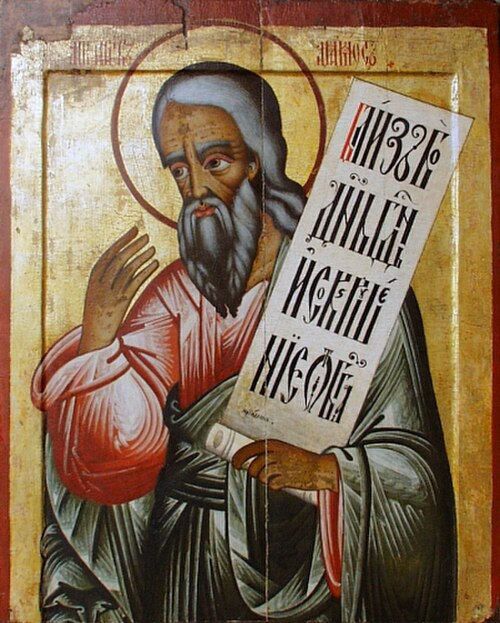 | Amos CH02-BCE08-03 | Amos-prophet.jpg | 18 cen. icon painter | Public domain | Chân dung Amos (tưởng tượng). Ảnh: Wikimedia Commons, Public domain. |
| Isaiah CH02-BCE08-04 | Isaiah.jpg | 18 century icon painter | Public domain | Chân dung Isaiah (tưởng tượng). Ảnh: Wikimedia Commons, Public domain. | |
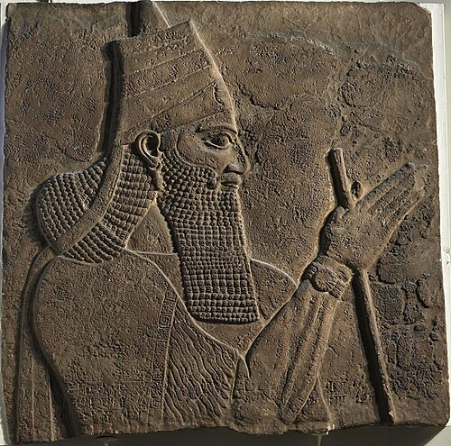 | Tiglath-Pileser III CH02-BCE08-05 | Tilglath pileser iii.jpg | Unknown artist Unknown artist | Public domain | Chân dung Tiglath-Pileser III, Tilglath pileser iii, 728 TCN. Ảnh: Wikimedia Commons, Public domain. |
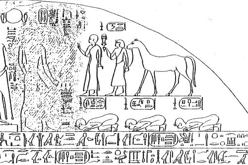 | Piye CH02-BCE08-06 | Stele Piye submission Mariette.jpg | Auguste Mariette (1821-1881) | Public domain | Chân dung Piye (tưởng tượng). Ảnh: Wikimedia Commons, Public domain. |
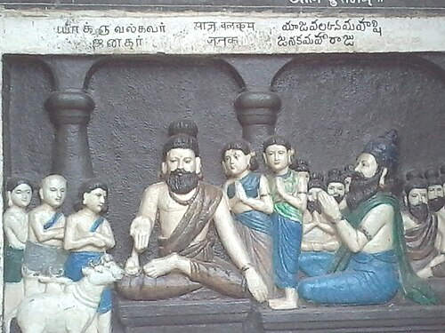 | Hezekiah CH02-BCE08-07 | Yajnavalkya and Janaka.jpg | எஸ். பி. கிருஷ்ணமூர்த்தி | CC BY-SA 3.0 ghi công bắt buộc | Chân dung Yajnavalkya (tưởng tượng). Ảnh: Wikimedia Commons, CC BY-SA 3.0. |
 | An Dương Vương CH90-BCE03_01-01 | AnDuongVuong.jpg | Amore Mio | CC BY-SA 3.0 ghi công bắt buộc | Chân dung An Dương Vương, AnDuongVuong (tưởng tượng). Ảnh: Wikimedia Commons, CC BY-SA 3.0. |
 | Triệu Đà CH90-BCE03_01-02 | A statue of Zhao Tuo.jpg | David Chen ( Iamdavidtheking 11:50, 10 September 2007 (UTC)) | CC BY 3.0 ghi công bắt buộc | Chân dung Triệu Đà, A statue of Zhao Tuo (tưởng tượng). Ảnh: Wikimedia Commons, CC BY 3.0. |
 | Bà Triệu CH90-CE01_09-02 | Ba trieu cuoi voi.jpg | Nghệ nhân tranh Đông Hồ | Public domain | Chân dung Bà Triệu (tưởng tượng). Ảnh: Wikimedia Commons, Public domain. |
 | Lý Nam Đế CH90-CE01_09-05 | Emperor Ly Nam De.jpg | Unknown author Unknown author | Public domain | Chân dung Lý Nam Đế, thế kỷ 18 (tưởng tượng). Ảnh: Wikimedia Commons, Public domain. |
 | Phùng Hưng CH90-CE01_09-07 | TuongPhungHung.jpg | Doãn Hiệu at Vietnamese Wikipedia | CC BY 3.0 ghi công bắt buộc | Chân dung Phùng Hưng, TuongPhungHung (tưởng tượng). Ảnh: Wikimedia Commons, CC BY 3.0. |
 | Đinh Bộ Lĩnh CH90-CE10_14-02 | VuaDinhTienHoang.jpg | Hungquoc at Vietnamese Wikipedia | Public domain | Chân dung Đinh Bộ Lĩnh, VuaDinhTienHoang (tưởng tượng). Ảnh: Wikimedia Commons, Public domain. |
 | Trần Hưng Đạo CH90-CE10_14-07 | Tran Hung Dao - Nha Trang - 2.jpg | Odessey | CC BY-SA 3.0 ghi công bắt buộc | Chân dung Trần Hưng Đạo (tưởng tượng). Ảnh: Wikimedia Commons, CC BY-SA 3.0. |
 | Trần Nhân Tông CH90-CE10_14-08 | Trần Nhân Tông.jpg | Lưu Ly at Vietnamese Wikipedia | Public domain | Chân dung Trần Nhân Tông (tưởng tượng). Ảnh: Wikimedia Commons, Public domain. |
 | Chu Văn An CH90-CE10_14-09 | Chu Văn An statue.jpg | davidhealy | CC BY-SA 2.0 ghi công bắt buộc | Chân dung Chu Văn An (tưởng tượng). Ảnh: Wikimedia Commons, CC BY-SA 2.0. |
 | Lê Lợi CH90-CE15_18-01 | Le Loi statue.JPG | Nguyễn Thanh Quang | CC BY-SA 3.0 ghi công bắt buộc | Chân dung Lê Lợi, 2006 (tưởng tượng). Ảnh: Wikimedia Commons, CC BY-SA 3.0. |
 | Nguyễn Trãi CH90-CE15_18-02 | Nguyen Trai.jpg | Unknown author Unknown author | Public domain | Chân dung Nguyễn Trãi, 1400. Ảnh: Wikimedia Commons, Public domain. |
 | Lê Thánh Tông CH90-CE15_18-03 | Lê Thánh Tông.jpg | Ngoisao.vn | Public domain | Chân dung Lê Thánh Tông. Ảnh: Wikimedia Commons, Public domain. |
 | Nguyễn Bỉnh Khiêm CH90-CE15_18-04 | Cao Dai three saints signing an accord.jpg | Nguyễn Thanh Quang (picture by Lê Minh Tòng) | CC BY-SA 3.0 ghi công bắt buộc | Chân dung Nguyễn Bỉnh Khiêm, Cao Dai three saints signing an accord, 2006 (tưởng tượng). Ảnh: Wikimedia Commons, CC BY-SA 3.0. |
 | Nguyễn Hoàng CH90-CE15_18-05 | Nguyen hoang.jpg | Nguyễn Hoàng Quý | CC BY-SA 4.0 ghi công bắt buộc | Chân dung Nguyễn Hoàng, 2021 (tưởng tượng). Ảnh: Wikimedia Commons, CC BY-SA 4.0. |
 | Alexandre de Rhodes CH90-CE15_18-07 | Derhodes.jpg | http://en.wikipedia.org/wiki/Image:Derhodes.jpg#filelinks | Public domain | Chân dung Alexandre de Rhodes, Derhodes. Ảnh: Wikimedia Commons, Public domain. |
 | Lê Quý Đôn CH90-CE15_18-08 | Statue of Le Quy Don cropped.png | Statue_of_Le_Quy_Don.JPG : Amore Mio derivative work: Amore Mio ( talk ) | CC BY-SA 3.0 ghi công bắt buộc | Chân dung Lê Quý Đôn, 2009 (tưởng tượng). Ảnh: Wikimedia Commons, CC BY-SA 3.0. |
 | Quang Trung CH90-CE15_18-10 | A portrait painting depicting Annam King, Ruan Guangping.jpg | Mou Bingtai (繆炳泰, ? - ?). Qing Court's painters in the XVIII-century | Public domain | Chân dung Quang Trung, A portrait painting depicting Annam King, Ruan Guangping, 2017 (tưởng tượng). Ảnh: Wikimedia Commons, Public domain. |
 | Nguyễn Du CH90-CE19_20-01 | Tượng đài cụ Nguyễn Du.jpg | Vienvo03 | CC BY-SA 4.0 ghi công bắt buộc | Chân dung Nguyễn Du, 2015 (tưởng tượng). Ảnh: Wikimedia Commons, CC BY-SA 4.0. |
 | Gia Long CH90-CE19_20-02 | Emperor Gia Long.jpg | Unknown author Unknown author , restored by Nguyễn Phước Vĩnh Khánh ( [1] ) | Public domain | Chân dung Gia Long, thế kỷ 19. Ảnh: Wikimedia Commons, Public domain. |
 | Hồ Xuân Hương CH90-CE19_20-03 | Ho Xuan Huong.png | 胡春香，東州阮友進收集，河內，東京印館出版，1916年。(Đông Châu Nguyễn Hữu Tiến:《Giai nhân di mặc》 Hà Nội, 1916). Original uploader was Iflwlou at zh.wikipedia | Public domain | Chân dung Hồ Xuân Hương, 2008 (tưởng tượng). Ảnh: Wikimedia Commons, Public domain. |
 | Trương Vĩnh Ký CH90-CE19_20-04 | Truong Vinh Ky Vietnamese linguist.jpg | Unknown author Unknown author | Public domain | Chân dung Trương Vĩnh Ký, khoảng 1898. Ảnh: Wikimedia Commons, Public domain. |
 | Phan Bội Châu CH90-CE19_20-05 | Phan Boi Chau.jpg | Unknown author Unknown author | Public domain | Chân dung Phan Bội Châu, 1920. Ảnh: Wikimedia Commons, Public domain. |
 | Phan Châu Trinh CH90-CE19_20-06 | Phan Chau Trinh.jpg | Khánh Ký | Public domain | Chân dung Phan Châu Trinh, 1959. Ảnh: Wikimedia Commons, Public domain. |
 | Tôn Thất Tùng CH90-CE19_20-09 | Professor Tôn Thất Tùng (1947).jpg | Unknown photographer | Public domain | Chân dung Tôn Thất Tùng, 1947. Ảnh: Wikimedia Commons, Public domain. |
 | Thích Nhất Hạnh CH90-CE19_20-10 | Thich Nhat Hanh 12 (cropped).jpg | Duc (pixiduc) from Paris, France. | CC BY-SA 2.0 ghi công bắt buộc | Chân dung Thích Nhất Hạnh, 2006. Ảnh: Wikimedia Commons, CC BY-SA 2.0. |

.jpg){kind=link}


.jpg){kind=link}
.jpg){kind=link}


_1_1.jpg){kind=link}


.jpg){kind=link}


.jpg){kind=link}
.jpg){kind=link}
.jpg){kind=link}